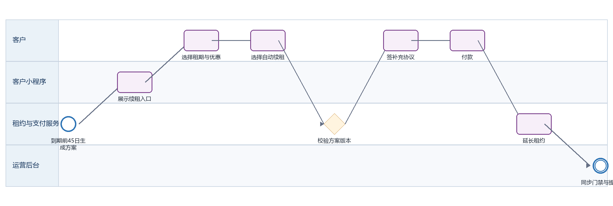

迷你仓续租 PRD
下载 Word 文档迷你仓续租 PRD
客户小程序研发详细需求规格 · V2.0 · 2026-09-08
定义到期前续租方案展示、优惠试算、补充协议签署、付款和新租期生效规则。
| 属性 | 内容 |
|---|---|
| 文档编号 | MP-ST-03 |
| 适用端 | 客户小程序、运营后台、工单小程序及领域服务 |
| 范围 | 续租资格、方案、自动续租授权、补充协议、付款、失败恢复、提醒。 |
| 不在本模块范围 | 租金策略审批和财务清算。 |
1 目标与边界
1.1 本期范围
续租资格、方案、自动续租授权、补充协议、付款、失败恢复、提醒。
1.2 不在本模块范围
租金策略审批和财务清算。
1.3 角色与系统责任
| 角色或系统 | 职责 |
|---|---|
| 客户 | 浏览、选择、签约、付款、提交申请、查询进度 |
| 客户小程序 | 采集意图并展示服务端状态，不自行决定价格、库存、资格或审批结果 |
| 运营后台 | 维护主数据、价格、库存、可操作项、审批、异常处理和人工改派 |
| 工单小程序 | 承接送取、验收、搬仓、清仓等线下任务，回传节点、附件和异常 |
| 领域服务 | 保存订单、租约、箱体、预约、支付与合同的权威状态并发布事件 |
2 BPMN 业务流程

圆形表示开始或结束事件，圆角矩形表示任务，菱形表示服务端判断。
跨端节点必须先写入领域服务，再由事件刷新客户侧时间线。
3 状态机与准入
| 状态码 | 客户文案 | 进入条件 | 下一步 |
|---|---|---|---|
| ELIGIBLE | 可续租 | 进入可续租窗口 | 选择方案 |
| PENDING_SIGN | 续租待签约 | 方案已确认 | 签署或取消 |
| PENDING_PAY | 续租待付款 | 补充协议已签 | 付款或超时 |
| PROCESSING | 续租生效中 | 支付已确认 | 延长租约 |
| ACTIVE | 续租已生效 | 新到期日已写入 | 终态 |
| FAILED | 续租异常 | 支付与租约不一致 | 后台补偿 |
状态码是跨端契约，中文文案不得作为业务判断条件；写操作必须携带聚合版本并处理409冲突。
4 页面与交互
4.1 续租方案
| 属性 | 要求 |
|---|---|
| 建议路由 | /pages/rental/renew |
| 入口 | 我的服务、订单详情、到期提醒 |
| 页面字段 | 当前租约、到期日、现月租、可选期限、优惠后月租、节省金额、总额、自动续租开关、扣款方式 |
| 主要操作 | 切换期限、选择优惠、开启自动续租、提交方案 |
| 通用状态 | 骨架屏、空态、无网络、超时、无权限、数据已变化、提交中、提交成功和提交失败分别实现 |
4.2 续租签约
| 属性 | 要求 |
|---|---|
| 建议路由 | /pages/rental/renew-sign |
| 入口 | 方案确认 |
| 页面字段 | 补充协议版本、期限、金额、新起止日期、自动续费授权、签名 |
| 主要操作 | 阅读、签名、确认 |
| 通用状态 | 骨架屏、空态、无网络、超时、无权限、数据已变化、提交中、提交成功和提交失败分别实现 |
4.3 续租付款结果
| 属性 | 要求 |
|---|---|
| 建议路由 | /pages/pay/index |
| 入口 | 签约完成 |
| 页面字段 | 续租订单、应付、渠道、结果、新到期日 |
| 主要操作 | 付款、重试、查看订单 |
| 通用状态 | 骨架屏、空态、无网络、超时、无权限、数据已变化、提交中、提交成功和提交失败分别实现 |
5 业务规则
默认到期前45日生成续租方案，提醒节点45/30/14/7日由后台配置。
仅 allowedActions 含 RENEW 且不存在活动退租/转仓申请时可提交。
方案必须带 planVersion 和 expiresAt；后台调价后旧方案不可签署。
自动续租默认关闭；开启时必须单独同意自动续费协议并选择有效扣款授权。
付款成功后以原到期日次日为新租期起点，不因提前付款损失剩余租期。
优惠券核销、合同归档、租约延长和提醒取消须幂等。
6 接口契约
| 方法 | 接口 | 用途 | 幂等要求 |
|---|---|---|---|
| GET | /rentals/{id}/renewal-options | 查询续租资格和方案 | 否 |
| POST | /renewals/quotes | 生成续租报价 | 是，requestId |
| POST | /renewals/{id}/sign | 签署补充协议 | 是，signatureRequestId |
| POST | /renewals/{id}/payment-intent | 创建支付意图 | 是，attemptNo |
| GET | /renewals/{id} | 查询续租进度 | 否 |
通用响应包含code、message、data、traceId和serverTime。
金额使用整数最小货币单位；写接口校验登录身份、资源归属、幂等键和聚合版本。
错误码区分参数、资格、并发、锁定、支付确认、权限和服务不可用。
7 跨端交互和数据一致性
| 方向 | 规则 |
|---|---|
| 小程序到后台 | 只调用BFF或领域服务；后台通过同一业务编号处理。 |
| 后台到小程序 | 后台写领域状态并发布事件，小程序刷新权威状态。 |
| 后台到工单小程序 | 线下任务携带workOrderId、orderId、SLA和附件要求。 |
| 工单到客户小程序 | 扫码、附件和异常先回传领域服务，再生成客户可见时间线。 |
| 消息通知 | 只携带业务编号与深链，不下发敏感合同或门禁凭证。 |
7.1 领域事件
renewal.offer_created
renewal.signed
renewal.paid
rental.extended
renewal.failed
8 异常与恢复
| 场景 | 识别条件 | 客户侧与后台处理 |
|---|---|---|
| 存在冲突申请 | 已有转仓/退租 | 禁止续租并跳转对应进度 |
| 方案过期 | planVersion失效 | 刷新价格并要求再次确认 |
| 自动扣款授权失败 | 渠道拒绝 | 续租仍可手动付款，自动续租保持关闭 |
| 付款成功延租失败 | 跨服务异常 | 订单显示处理中并创建财务/租约补偿任务 |
9 非功能与安全
列表首屏P95不超过2秒，详情P95不超过1.5秒；长流程返回受理结果和异步进度。
敏感字段最小化展示，日志脱敏，下载资产使用短时签名URL。
所有状态变更记录前后值、操作者、来源端、原因码、时间和traceId。
支持简体中文、繁体中文、英文；日期、货币和地址按香港业务规范展示。
10 埋点与指标
| 事件 | 触发 | 关键属性 |
|---|---|---|
| page_view | 进入页面 | pageCode、source、orderId、businessType |
| action_click | 点击主要操作 | actionCode、statusCode、orderVersion |
| submit_result | 写操作完成 | requestId、result、errorCode、durationMs、traceId |
| flow_step_changed | 业务节点变化 | fromStatus、toStatus、eventId、operatorType |
11 验收标准
AC-01 同一租约只存在一个活动续租申请。
AC-02 切换期限后所有金额由新报价返回。
AC-03 未同意自动续费协议不得开启自动续租。
AC-04 重复支付回调只延长一次租约。
AC-05 生效后订单详情显示新起止日期并取消原到期提醒。
12 研发交付清单
| 角色 | 交付物 |
|---|---|
| 产品与设计 | 页面状态稿、字段字典、三语文案和验收用例 |
| 小程序前端 | 页面、组件、登录恢复、状态处理、埋点和错误恢复 |
| 后端 | OpenAPI、状态机、幂等、权限、事件、补偿和审计 |
| 运营后台 | 配置、审批、异常处理、重试和人工兜底 |
| 工单小程序 | 任务、扫码、附件、节点回传和异常上报 |
| 测试 | 端到端、并发、权限、弱网、重复事件和补偿验证 |